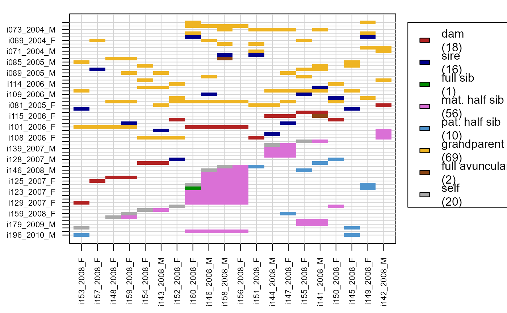
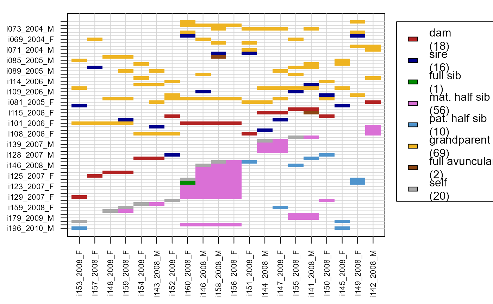

Plot Pairwise Relationships
PlotRelPairs.RdPlot pairwise 1st and 2nd degree relationships between individuals, similar to Colony's dyad plot.
Usage
PlotRelPairs(
RelM = NULL,
subset.x = NULL,
subset.y = NULL,
drop.U = TRUE,
pch.symbols = FALSE,
cex.axis = 0.7,
mar = c(5, 5, 1, 8)
)Arguments
- RelM
square matrix with relationships between all pairs of individuals, as generated by
GetRelM. Row and column names should be individual IDs.- subset.x
vector with IDs to show on the x-axis; the y-axis will include all siblings, parents and grandparents of these individuals.
- subset.y
vector with IDs to show on the y-axis; the x-axis will include all siblings, offspring and grandoffspring of these individuals. Specify either
subset.xorsubset.y(or neither), not both.- drop.U
logical: omit individuals without relatives from the plot, and omit individuals without parents from the x-axis. Ignored if
subset.xorsubset.yis specified.- pch.symbols
logical: use different symbols for the different relationships (TRUE) or only colours in a heatmap-like fashion (FALSE). Question marks in the plot indicate that one or more of the symbols are not supported on your machine.
- cex.axis
the magnification to be used for axis annotation. Decrease this value if R is dropping axis labels to prevent them from overlapping.
- mar
A numerical vector of the form c(bottom, left, top, right) which gives the number of lines of margin to be specified on the four sides of the plot.
Value
The subsetted, rearranged RelM is returned
invisible.
The numbers of unique pairs of each relationship type are given in the
figure legend. The number of 'self' pairs refers to the number of
individuals on the x-axis, not all of whom may occur on the y-axis when
drop.U=TRUE or a subset is specified.
Details
Parents are shown above the diagonal (y-axis is parent of x-axis),
siblings below the diagonal. If present, grandparents and full aunts/uncles
are also shown above the diagonal. Individuals are sorted by dam ID and
sire ID so that siblings are grouped together, and then by generation
(getGenerations) so that later generations are closer to the
origin.
If RelM is based on a dataframe with pairs rather than a pedigree,
parents and grandparents are similarly only displayed above the diagonal,
but the order of individuals is arbitrary and the ID on the x-axis is as
likely to be the grandparent of the one on the y-axis as vice versa. Second
degree relatives of unknown classification ('2nd', may be HS, GP or FA) are
only shown below the diagonal. The switch between pedigree-based versus
pairs-based is made on whether parent-offspring pairs are coded as 'M','P',
'MP', 'O' (unidirectional, from pedigree) or as 'PO' (bidirectional, from
pairs).
Note that half-avuncular and (double) full cousin pairs are ignored.
See also
GetRelM; SummarySeq for individual-wise
graphical pedigree summaries.
Examples
Rel.griffin <- GetRelM(Ped_griffin, patmat=TRUE, GenBack=2)
PlotRelPairs(Rel.griffin)
 if (FALSE) { # \dontrun{
PlotRelPairs(Rel.griffin, pch.symbols = TRUE)
# plot with unicode symbols not supported on all platforms
} # }
# parents & grandparents of 2008 cohort:
PlotRelPairs(Rel.griffin,
subset.x = Ped_griffin$id[Ped_griffin$birthyear ==2008])

# offspring & grand-offspring of 2002 cohort:
PlotRelPairs(Rel.griffin,
subset.y = Ped_griffin$id[Ped_griffin$birthyear ==2002])
if (FALSE) { # \dontrun{
PlotRelPairs(Rel.griffin, pch.symbols = TRUE)
# plot with unicode symbols not supported on all platforms
} # }
# parents & grandparents of 2008 cohort:
PlotRelPairs(Rel.griffin,
subset.x = Ped_griffin$id[Ped_griffin$birthyear ==2008])

# offspring & grand-offspring of 2002 cohort:
PlotRelPairs(Rel.griffin,
subset.y = Ped_griffin$id[Ped_griffin$birthyear ==2002])